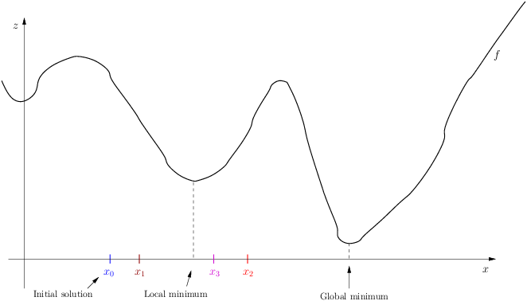
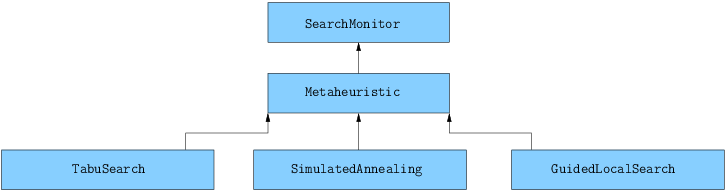

7.3. Meta-heuristics in or-tools
To help you (and us) in the building of meta-heuristics, the or-tools library offers an abstract Metaheuristic which your specialized class can inherit from. We deal with optimization problems: we either minimize or maximize an objective function. The way meta-heuristics are implemented in or-tools is to let the meta-heuristic itself decide what to do when the objective value changes: it can add a new constraint on the objective value and/or the next solution to be found. This means that you don’t use the OptimizeVar class to encapsulate your objective function[1] but instead use the Metaheuristic class to add complementary constraints on your objective.
Warning
Don’t use the OptimizeVar class to encapsulate your objective function when using a Metaheuristic class.
The Metaheuristic class inherits from the SearchMonitor class. SearchMonitors allow you to monitor/control the search. If you don’t remember anything about the basic search algorithm and the SearchMonitor class, we invite you to quickly (re)read the section Basic working of the solver: the search algorithm and especially the section Basic working of the solver: Local Search. We do sketch what the methods of the SearchMonitor class do in this chapter thought.
We reiterate our warning concerning the start of our meta-heuristics:
Warning
Our meta-heuristics only kick in when we have already reached a local optimum with the Local Search.
This is a choice in our implementations of the meta-heuristics. See the box Why wait for a local optimum to start a meta-heuristic? below for more.
One last thing before digging further into this fascinating subject. Because details matter very much in the case of meta-heuristic implementations, we present the full code of all the classes discussed in this and the next three sections.
7.3.1. The basic idea
The basic idea behind meta-heuristics is to enhance the Local Search. In particular, most meta-heuristics share (at least) the three following main features:
- avoid being trapped in local optimums;
- intensify the search in a promising neighborhood (intensification) and
- keep better solutions met during the search (aspiration criterion).
We discuss these three features more in details next.
7.3.1.1. The local optimum trap
Let’s reexamine the figure used in the previous chapter to illustrate Local Search:
With a given LocalSearchOperator and starting at  , we might find solutions
, we might find solutions  ,
,  ,
,  and even probably the local minimum depicted above.
In practice, no matter what starting point you take close to the local optimum, your Local Search will probably guide you towards this local optimum.
This is because at each of these points, locally and with the limited information your Local Search has, it will move towards this local optimum. This is called being trapped in a local optimum.
Meta-heuristics devise clever ways to get out of this local optimum trap but to do so, meta-heuristics must accept worse solutions.
and even probably the local minimum depicted above.
In practice, no matter what starting point you take close to the local optimum, your Local Search will probably guide you towards this local optimum.
This is because at each of these points, locally and with the limited information your Local Search has, it will move towards this local optimum. This is called being trapped in a local optimum.
Meta-heuristics devise clever ways to get out of this local optimum trap but to do so, meta-heuristics must accept worse solutions.
7.3.1.2. Intensification vs diversification
Avoiding being trapped in a local optimum can be seen as a special case of diversification of the search: the algorithm explores different parts of the search space in the hope of finding promising neighborhoods that a basic Local Search algorithm would not explore on its own. The opposite is also desirable. Once a promising neighborhood has been found, it is probably worth exploring it in more details. This is called intensification.
Often the intensification and diversification mechanisms are conflicting and the meta-heuristic oscillates between these two phases in the search.
7.3.1.3. The aspiration criterion
In practice, we often see the following scenario. A LocalSearchOperator could have found a better candidate solution in a neighborhood if it were operating without restrictions by the meta-heuristics That’s a really annoying situation: you want to help your LocalSearchOperator by restricting it a little bit and then it turns out that without your guidelines, it would have been able to find a better solution This situation is so common that most meta-heuristics use an aspiration criterion: a criterion to accept a solution even if it doesn’t follow the meta-heuristic guidelines. Most of the time this criterion is based on the quality of the found solution: a solution is accepted no matter what if it is better than any other solution encountered so far.
7.3.2. The Metaheuristic class
The base Metaheuristic class is quite simple. It only implements three basic virtual methods:
- virtual void EnterSearch();
- virtual bool AtSolution() and
- virtual void RefuteDecision(Decision* const d).
It also defines five basic variables:
protected:
IntVar* const objective_;
int64 step_;
int64 current_;
int64 best_;
bool maximize_;
The names of the variables are self-explanatory. maximize_ is set to true when maximizing and false when minimizing.
We reproduce the implementation of the three virtual methods integrally. Not only are they pedagogically interesting, it is also good to know them to avoid reinventing the wheel.
7.3.2.1. EnterSearch()
EnterSearch is called at the beginning of the search and is the perfect place to initialize our variables:
virtual void Metaheuristic::EnterSearch() {
if (maximize_) {
best_ = objective_->Min();
current_ = kint64min;
} else {
best_ = objective_->Max();
current_ = kint64max;
}
}
The other variables are set in the constructor. The current_ variable holds the value of the current solution and is used to bound the objective value. We start with a very high value to allow the meta-heuristic to find solutions that have worst objective values than the best solution encountered so far.
7.3.2.2. AtSolution()
The AtSolution() method is called whenever a valid solution is found. If the return value is true, then the search will resume, otherwise the search will stop there. This is the perfect place to update the current and best solution:
virtual bool Metaheuristic::AtSolution() {
current_ = objective_->Value();
if (maximize_) {
best_ = std::max(current_, best_);
} else {
best_ = std::min(current_, best_);
}
return true;
}
By default, we don’t want the Metaheuristic class to halt the search so we return true.
7.3.2.3. RefuteDecision()
RefuteDecision(Decision* const d) is called just before refuting the corresponding Decision. Remember how, at each node of the search tree, the search algorithm visits two search sub-trees: the first one when applying the Decision and the second one when refuting this Decision. This second visit happens (essentially) when the search algorithm backtracks and on its way back we test if our meta-heuristic can still beat the best solution or not:
virtual void Metaheuristic::RefuteDecision(Decision* d) {
if (maximize_) {
if (objective_->Max() < best_ + step_) {
solver()->Fail();
}
} else if (objective_->Min() > best_ - step_) {
solver()->Fail();
}
}
If our meta-heuristic is not able to beat the best solution, we make the search fail at this node and let the solver continue the search at another node. We don’t take any action before a Decision is applied by default because each meta-heuristic has its own way of dealing with an applied Decision. You’ll probably need to overwrite the ApplyDecision() method for each meta-heuristic.
Do I really need to inherit from Metaheurstic to create my specialized meta-heuristic?
Using a SearchMonitor is probably the way to go if you want to implement a meta-heuristic. And if you decide to inherit from a SearchMonitor, why not benefit from the added value of the Metaheuristic class? More generally, isn’t there another way to construct a (meta-)heuristic? Large Neighborhood Search[2] is implemented by a BaseLNS class that is a IntVarLocalSearchOperator class for instance. It is all a question of choice and... trade-offs.
7.3.3. Interesting callbacks from the SearchMonitor class
We briefly review some of the callbacks of the SearchMonitor class that we might want to implement when designing a new meta-heuristic. We have already seen a basic use for EnterSearch(), AtSolution() and RefuteDecision() above. We probably need to extend/specialize these basic implementations but for now, we discuss other callbacks of the SearchMonitor class that can or must be used to implement a meta-heuristic. Don’t forget that we use Local Search.
7.3.3.1. ApplyDecision()
This is the counter-part of RefuteDecision() and must be implemented. This callback is called just before applying the Decision and you use it to control the direction of the Local Search, i.e. to control where to go in the neighborhood to find the next solution. Every meta-heuristic has its own search mechanism and this is the main method to implement.
To search for better solutions, you might want to implement something along these lines:
// Go downhill to the next local optimum
if (maximize_) {
const int64 bound = (current_ > kint64min) ?
current_ + step_ : current_;
s->AddConstraint(s->MakeGreaterOrEqual(objective_, bound));
} else {
const int64 bound = (current_ < kint64max) ?
current_ - step_ : current_;
s->AddConstraint(s->MakeLessOrEqual(objective_, bound));
}
7.3.3.2. LocalOptimum()
LocalOptimum() is called whenever a “local optimum is reached”: but it is up to you to decide in your SearchMonitor/Metaheuristic class if this is the case or not. Most probably you would want to agree if a solution has been found. You know that a nested Local Search has been exhausted and that probably a local best solution has been found. If your meta-heuristic continues the search as ours do, this is the place to launch your meta-heuristic and restart another Local Search.
Why wait for a local optimum to start a meta-heuristic?
Let’s try to explain our practical approach in a few lines. First of all, we do accept any improving solution found by a LocalSearchOperator even if the move leading to that solution isn’t permitted by the meta-heuristic. For instance, in our implementation of the Tabu Search, we allow the LocalSearchOperator to transgress any tabu moves[3]. To allow this, we implemented the tabu moves as constraints that can be violated in case a better solution is found. Thus as long as a LocalSearchOperator finds improving solutions, the use of a meta-heuristic will not make any difference in our implementations. Our point of view is to let a LocalSearchOperator do its job as long as it can improve the solutions it finds. Once it cannot improve a solution, i.e. once it scours the neighborhood without any success, we have... a local optimum. And that’s precisely when our meta-heuristics kick in: we would like to get out of this local minimum trap and visit other neighborhoods. This also means that you should use our meta-heuristics with LocalSearchOperators that are not too clever and don’t visit a huge number of neighbors (candidate solutions). For instance, LocalSearchOperators that include lots of randomness should probably best be avoided.
7.3.3.3. AcceptNeighbor()
This method is called whenever a neighbor (what we called a candidate solution in the previous chapter) has been selected (accepted and filtered) in one neighborhood. This is probably one iteration of your algorithm and the perfect time to update your search strategy depending on the new candidate solution.
7.3.4. Implemented meta-heuristics in or-tools
The following figure illustrates the hierarchy situation between the different implemented Metaheuristic classes:
Tabu Search, Simulated Annealing and Guided Local Search are three well-known meta-heuristics.
In the following sections, we’ll have a detailed look at each of these classes and apply them to solve one or several problems we have already encountered[4]. Meta-heuristic are more a general canvas within which much liberty is offered for a concrete and specialized implementation. Our implementation is only one among many.
These three meta-heuristics can be used within the Routing Library (RL) by switching a command line flag:
- routing_guided_local_search
- routing_simulated_annealing
- routing_tabu_search
All three flags are set to false by default. You can only use one meta-heuristic at a time.
Footnotes
| [1] | Well, if you do, nothing bad will happen. It’s just unnecessary work for the CP Solver. Both OptimizeVar and Metaheuristic classes are SearchMonitors. The Metaheuristic class was implemented to be used without the OptimizeVar class. This is the case for the three implemented Metaheuristics: TabuSearch, SimulatedAnnealing and GuidedLocalSearch. |
| [2] | You can read more about LNS in the section Large neighborhood search (LNS): the Job-Shop Problem. |
| [3] | See next section about the Tabu Search if you are not acquainted with this meta-heuristic. |
| [4] | We will not see an example for the GLS meta-heuristic because our implementation is tailored to solve Routing Problems. |
Google or-tools |
User's Manual
Google search
Welcome
Tutorial examples
Current chapter
7. Meta-heuristics: several previous problems